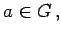

Inhalt Index DeskTop Bronstein

 Algebra und Diskrete Mathematik Klassische algebraische Strukturen Gruppen Untergruppen und direkte Produkte
Algebra und Diskrete Mathematik Klassische algebraische Strukturen Gruppen Untergruppen und direkte Produkte


Für Untergruppen U ist im allgemeinen aU verschieden von Ua (es gilt jedoch |aU|=|Ua|). Ist aber a U = U a für alle  so heißt U Normalteiler von  . Diese speziellen Untergruppen sind die Grundlage für die Bildung von Faktorgruppen.
. Diese speziellen Untergruppen sind die Grundlage für die Bildung von Faktorgruppen.
In ABELschen Gruppen ist jede Untergruppe Normalteiler.
| Beispiel A |
|
|
| Beispiel B |
|
Die geraden ganzen Zahlen bilden eine Untergruppe von |
| Beispiel D | ||||||
|
Spezielle Untergruppen der Gruppe GL(n) aller regulären Matrizen vom Typ (n,n) bezüglich der Matrizenmultiplikation:
Die Gruppe SL(n) ist Normalteiler von GL(n) (s. Homomorphiesatz für Gruppen) und SO(n) Normalteiler von O(n). |
| Beispiel E | ||||
|
Als Untergruppen der Gruppe aller regulären komplexen Matrizen seien erwähnt:
|